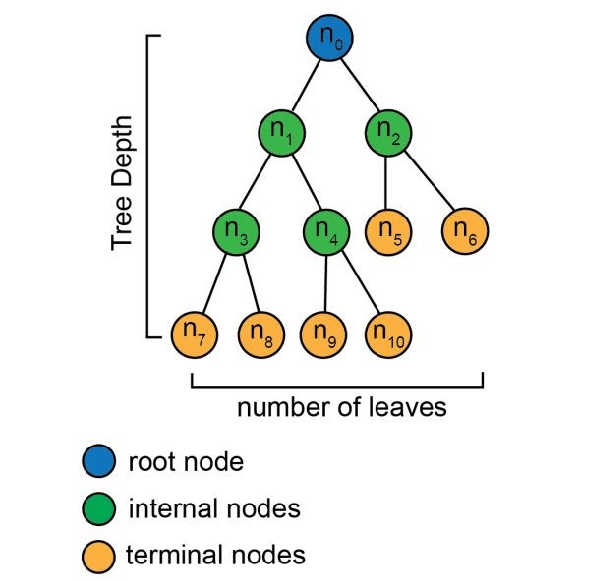

Decision Tree#
A Decision Tree is a supervised machine learning algorithm used for both classification and regression tasks. It is a tree-like model where each internal node represents a decision based on a feature, each branch represents an outcome of that decision, and each leaf node represents a class label (in classification) or a predicted value (in regression).

Decision Trees for classification#
In classification problems the following general process is followed:
The algorithm begins at the root node. This node asks a question about the data (e.g., “Is the weather sunny?”).
Based on the answer to the question, the algorithm follows the corresponding branch. Each branch leads to another node, which asks a further question.
This process continues until the algorithm reaches a leaf node. The leaf node represents the final classification (e.g., “Play outside” or “Stay indoors”).
Decision Trees for regression#
The process is similar, but instead of assigning class labels at the leaves, the algorithm calculates the average or mean value of the data points that reach that leaf. This average becomes the predicted value for a new data point.
Building a Decision Tree#
The key is to determine the best questions to ask at each node. The algorithm uses various criteria to select the most informative features:
Information Gain (ID3): Measures how much a feature reduces the uncertainty (entropy) in the data.
Gini Index (CART): Measures the impurity of a node. Lower Gini index indicates a purer node (i.e., most data points belong to the same class).
The algorithm selects the feature with the highest information gain or lowest Gini index to split the data at each node.
Strengths of Decision Trees#
Decision trees are easy to visualize and understand, making them useful for explaining the reasoning behind predictions.
Handles both categorical and numerical features. No need for feature scaling or encoding.
Can model complex relationships between features and the target variable (non-linear relationships).
Provides insights into which features are more important in the prediction.
Weaknesses of Decision Trees#
Can easily create overly complex trees that memorize the training data instead of generalizing (prone to overfitting).
Small changes in the data can lead to drastically different trees.
Can be less accurate for imbalanced datasets as it is inherently biased towards dominant classes.